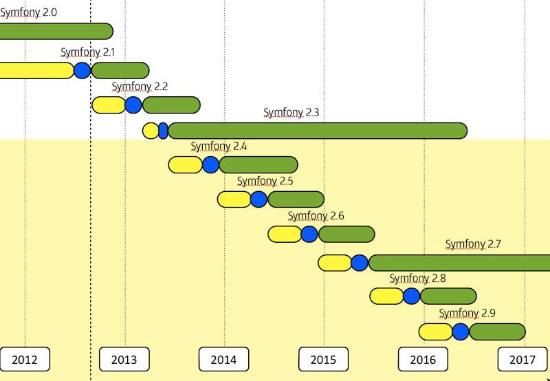

The Release Process¶
This document explains the Symfony release process (Symfony being the code
hosted on the main symfony/symfony Git repository).
Symfony manages its releases through a time-based model; a new Symfony minor version comes out every six months: one in May and one in November.
�技巧
The meaning of “minor” comes from the Semantic Versioning strategy.
Each minor version sticks to the same very well-defined process where we start with a development period, followed by a maintenance period.
注解
This release process has been adopted as of Symfony 2.2, and all the “rules” explained in this document must be strictly followed as of Symfony 2.4.
Development¶
The full development period lasts six months and is divided into two phases:
- Development: Four months to add new features and to enhance existing ones;
- Stabilisation: Two months to fix bugs, prepare the release, and wait for the whole Symfony ecosystem (third-party libraries, bundles, and projects using Symfony) to catch up.
During the development phase, any new feature can be reverted if it won’t be finished in time or if it won’t be stable enough to be included in the current final release.
Maintenance¶
Each Symfony minor version is maintained for a fixed period of time, depending on the type of the release. We have two maintenance periods:
- Bug fixes and security fixes: During this period, all issues can be fixed. The end of this period is referenced as being the end of maintenance of a release.
- Security fixes only: During this period, only security related issues can be fixed. The end of this period is referenced as being the end of life of a release.
Standard Versions¶
A standard minor version is maintained for an eight month period for bug fixes, and for a fourteen month period for security issue fixes.
Long Term Support Versions¶
Every two years, a new Long Term Support Version (aka LTS version) is published. Each LTS version is supported for a three year period for bug fixes, and for a four year period for security issue fixes.
注解
Paid support after the three year support provided by the community can also be bought from SensioLabs.
Schedule¶
Below is the schedule for the first few versions that use this release model:
- Yellow represents the Development phase
- Blue represents the Stabilisation phase
- Green represents the Maintenance period
This results in very predictable dates and maintenance periods:
| Version | Feature Freeze | Release | End of Maintenance | End of Life |
|---|---|---|---|---|
| 2.0 | 05/2011 | 07/2011 | 03/2013 (20 months) | 09/2013 |
| 2.1 | 07/2012 | 09/2012 | 05/2013 (9 months) | 11/2013 |
| 2.2 | 01/2013 | 03/2013 | 11/2013 (8 months) | 05/2014 |
| 2.3 | 03/2013 | 05/2013 | 05/2016 (36 months) | 05/2017 |
| 2.4 | 09/2013 | 11/2013 | 09/2014 (10 months [1]) | 01/2015 |
| 2.5 | 03/2014 | 05/2014 | 01/2015 (8 months) | 07/2015 |
| 2.6 | 09/2014 | 11/2014 | 07/2015 (8 months) | 01/2016 |
| 2.7 | 03/2015 | 05/2015 | 05/2018 (36 months [2]) | 05/2019 |
| 3.0 | 09/2015 | 11/2015 | 07/2016 (8 months) | 01/2017 |
| 3.1 | 03/2016 | 05/2016 | 01/2017 (8 months) | 07/2017 |
| 3.2 | 09/2016 | 11/2016 | 07/2017 (8 months) | 01/2018 |
| 3.3 | 03/2017 | 05/2017 | 05/2020 (36 months) | 05/2021 |
| ... | ... | ... | ... | ... |
| [1] | Symfony 2.4 maintenance has been extended to September 2014. |
| [2] | Symfony 2.7 is the last version of the Symfony 2.x branch. |
�技巧
If you want to learn more about the timeline of any given Symfony version, use the online timeline calculator. You can also get all data as a JSON string via a URL like http://symfony.com/roadmap.json?version=2.x.
�技巧
Whenever an important event related to Symfony versions happens (a version reaches end of maintenance or a new patch version is released for instance), you can automatically receive an email notification if you subscribed on the roadmap notification page.
Backwards Compatibility¶
Our Backwards Compatibility Promise is very strict and allows developers to upgrade with confidence from one minor version of Symfony to the next one.
Whenever keeping backward compatibility is not possible, the feature, the enhancement or the bug fix will be scheduled for the next major version.
注解
The work on a new major version of Symfony starts whenever enough major features breaking backward compatibility are waiting on the todo-list.
Deprecations¶
When a feature implementation cannot be replaced with a better one without breaking backward compatibility, there is still the possibility to deprecate the old implementation and add a new preferred one along side. Read the conventions document to learn more about how deprecations are handled in Symfony.
Rationale¶
This release process was adopted to give more predictability and transparency. It was discussed based on the following goals:
- Shorten the release cycle (allow developers to benefit from the new features faster);
- Give more visibility to the developers using the framework and Open-Source projects using Symfony;
- Improve the experience of Symfony core contributors: everyone knows when a feature might be available in Symfony;
- Coordinate the Symfony timeline with popular PHP projects that work well with Symfony and with projects using Symfony;
- Give time to the Symfony ecosystem to catch up with the new versions (bundle authors, documentation writers, translators, ...).
The six month period was chosen as two releases fit in a year. It also allows for plenty of time to work on new features and it allows for non-ready features to be postponed to the next version without having to wait too long for the next cycle.
The dual maintenance mode was adopted to make every Symfony user happy. Fast movers, who want to work with the latest and the greatest, use the standard version: a new version is published every six months, and there is a two months period to upgrade. Companies wanting more stability use the LTS versions: a new version is published every two years and there is a year to upgrade.